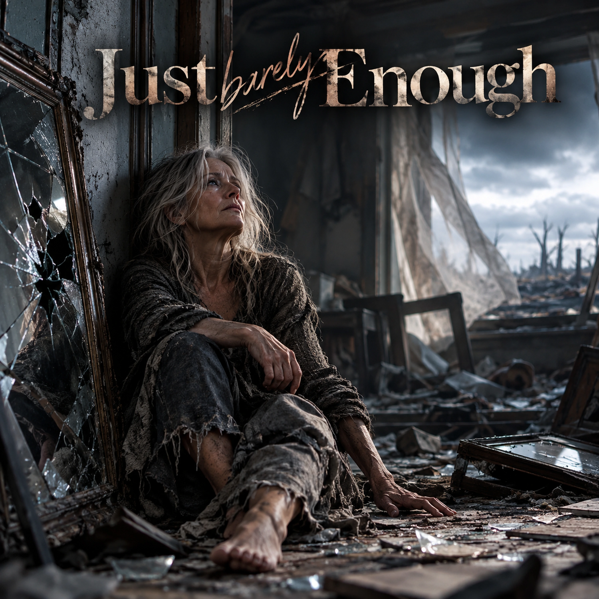

Just Enough

Lyrics
Verse 1
There’s a hum behind my breathing,
Like the world forgot to stop.
I’m a shadow in the hallway—
Just a flicker. Just a thought.
Verse 2
Someone’s crying in the mirror—
Might be me, but I can’t tell.
The echoes stay. The sights won’t leave.
It’s a slow and sinking hell.
Chorus
This is not happening to me.
It's not how I deserved to be.
I can’t unhear, unfeel, unsee—
I rise again from deep below.
Not brand new, not worn and old,
I know what hurts, what heals, what holds.
Verse 3
All the clocks have quit their ticking.
Even time won’t stick around.
I keep walking through the silence,
Just to feel my feet on ground.
Chorus
This is not happening to me.
It's not how I deserved to be.
I can’t unhear, unfeel, unsee—
I rise again from deep below.
Not brand new, not worn and old,
I know what hurts, what heals, what holds.
Bridge
Somewhere past the breaking point,
When breath was just a thread—
My Will stood up inside my bones,
And waked me up! That's what I said.
Final Chorus
This is not happeninG to me.
It's not how I deserved to be.
I can’t unhear, unfeel, unsee—
I rise again from deep below.
Not brand new, not worn and old,
I know what hurts, what heals, what holds.
I rise again from deep below.
Not brand new, not worn and old,
I know what hurts, what heals, what holds.
Outro
Not healed, not whole,
Just enough for me to be.
Devotional
When Survival Is All We Can Manage
“A bruised reed shall he not break, and the smoking flax shall he not quench.” — Isaiah 42:3 (KJV)
There are experiences that divide life into before and after. A fire, a violent storm, a devastating loss, an accident, an assault, or an unexpected tragedy can change everything in a moment. What was familiar becomes unrecognizable. What once felt safe no longer does.
Sometimes the greatest struggle begins after the immediate danger has passed.
The song, Just Enough, enters that bewildering aftermath. The world continues around us, but something within us seems suspended. Time loses its meaning. Memories intrude. Sounds and images return without invitation. We may feel disconnected from our surroundings, even from ourselves.
“My soul is weary of my life.” (Job 10:1, KJV)
Job knew what it meant to have his world shattered. His suffering was not evidence that he had ceased to matter to God. Nor did his anguish make him faithless. Scripture allows us to hear his distress without pretending that his losses were small.
There are times when suffering is too great for eloquent prayers, confident declarations, or even clear thoughts. And that is where this song begins.
What Remains After Everything Changes
The chorus begins with disbelief: “This is not happening to me. / It's not how I deserved to be. / I can't unhear, unfeel, unsee—”
Trauma does not always disappear when the danger ends. The mind and body may continue responding to what has happened. Recovery can be uneven, and the person who emerges may not feel like the person who existed before.
Yet the chorus does not end in disbelief: “I rise again from deep below. / Not brand new, not worn and old, / I know what hurts, what heals, what holds.”
There is remarkable honesty in those words. Healing does not necessarily mean returning to who we were. Some experiences leave lasting changes. But being changed does not mean being without value, purpose, or hope.
Paul wrote, “We are troubled on every side, yet not distressed; we are perplexed, but not in despair; Persecuted, but not forsaken; cast down, but not destroyed.” (2 Corinthians 4:8–9, KJV)
These words do not deny suffering. They acknowledge it while declaring that suffering does not have the final authority over those who belong to Christ.
When Strength Is Almost Gone
The bridge marks a turning point: “Somewhere past the breaking point, / When breath was just a thread— / My Will stood up inside my bones, / And waked me up!”
Sometimes determination begins as something very small. Not a triumphant declaration, but a decision to take another breath, stand again, or endure another hour.
That determination matters. Yet Scripture reminds us that our ultimate hope does not depend upon the strength of our own will.
God told Paul, “My grace is sufficient for thee: for my strength is made perfect in weakness.” (2 Corinthians 12:9, KJV)
The Lord does not require us to become strong before we can come to Him. His grace meets us in our weakness.
Psalm 34:18 assures us, “The LORD is nigh unto them that are of a broken heart; and saveth such as be of a contrite spirit.”
We may not feel His nearness. We may be too overwhelmed even to recognize comfort. But His faithfulness is not measured by our emotional awareness of it.
Just Enough
The song ends almost in a whisper: “Not healed, not whole, / Just enough for me to be.”
There is no grand celebration. No claim that every wound has closed or every memory has faded. Only the quiet recognition that life continues. And sometimes, that is an enormous accomplishment.
The prophet Jeremiah wrote, “It is of the LORD'S mercies that we are not consumed, because his compassions fail not. They are new every morning: great is thy faithfulness.” (Lamentations 3:22–23, KJV)
We are not promised that every morning will be easy. We are reminded that God's compassion has not been exhausted by yesterday's suffering.
For someone struggling through the aftermath of devastation, tomorrow may be too much to contemplate. Today may be all that can be managed. And today, there may be just enough strength for one more step.
A Quiet Connection
Just Enough is accompanied by the song, Never Alone. The first acknowledges what it means to survive when everything seems broken. The second offers reassurance that God's presence remains, even when the suffering is too great for us to recognize it.
The reassurance does not erase the devastation. Nor does it demand that healing happen on a schedule. It simply reminds us that we do not have to face the journey alone.
“I will never leave thee, nor forsake thee.” — Hebrews 13:5 (KJV)
For Reflection
Have I expected myself or someone else to recover more quickly than circumstances allow? Can I acknowledge pain without allowing it to define the entirety of a life? When my own strength seems insufficient, am I willing to seek God's help and accept the care of others? What might one small step forward look like today?
Prayer
Heavenly Father, You know the wounds that cannot be seen and the memories that refuse to fade. You know how difficult it can be simply to rise and face another day.
Draw near to those who are frightened, exhausted, grieving, or overwhelmed. Protect those who remain in danger, and bring trustworthy people alongside those who need help. Give wisdom to those providing care and patience to those traveling the long road toward recovery.
When strength is almost gone, sustain us by Your grace. When tomorrow seems impossible, help us face today. And when we cannot sense Your presence, remind us through Your Word that You have not forsaken us.
In Jesus' name, Amen.
Extra Info — Scripture Map
God's care for the bruised and vulnerable: Isaiah 42:1–4
Job's anguish: Job 10:1–7
Pressed, yet not destroyed: 2 Corinthians 4:7–12
Strength made perfect in weakness: 2 Corinthians 12:7–10
Near to the brokenhearted: Psalm 34:17–19
Mercies new every morning: Lamentations 3:21–26
Never forsaken: Hebrews 13:5–6
Companion song: Never Alone →